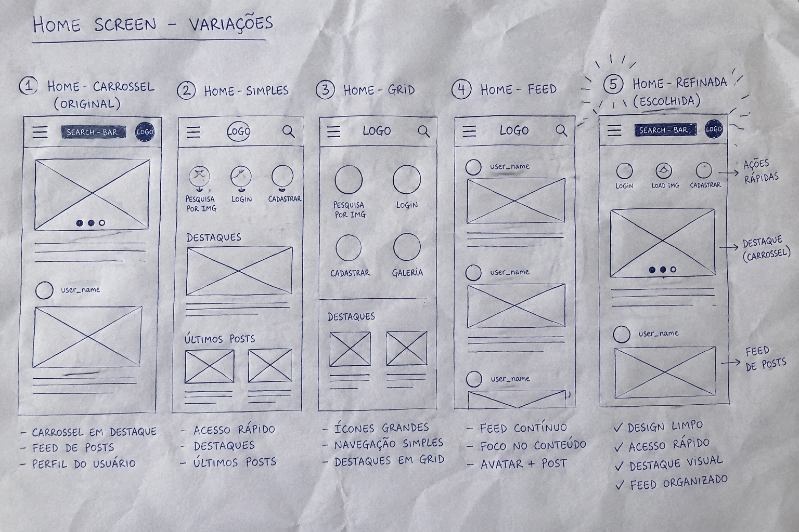

Flora Hub is a mobile app built to connect and inform plant lovers on a single platform — combining verified care knowledge with a trusted peer community.
07 September 2026 – 10 September 2026
Information and access points are scattered across WhatsApp groups, YouTube channels, browser searches, identification apps, databases, and marketplaces. Users just don't trust the information they find.
Develop an app where users can share experience and compare it with scientific knowledge about plants. Users can identify plants by photographing them and connect with other users who share the same interests.
Full Stack UX Designer.
A Google Forms survey split respondents into two groups: people who currently take care of plants, and people who do not.
Results:
Direct and indirect competitors in the plant-care space were mapped to identify gaps Flora Hub could fill — following the same audit structure used for the course's Food Trucks example.
| Competitor | Type | Target audience | Price | Unique value proposition | Strengths | Gaps |
|---|---|---|---|---|---|---|
| Flora Hub our company |
— | Millennial & Gen Z hobbyist gardeners, plus total beginners | Free / $2.99 mo premium (planned) | Only app combining verified scientific care data, peer community trust, and clear pet/child safety information in one place. | Concept validated through prototype usability testing (see Usability study findings). | Not yet launched; no real usage data yet. |
| PlantNet | Direct | Botanists & nature enthusiasts | Free | Crowd-sourced species identification backed by scientific institutions. | Large, accurate species database; fast camera-based identification. | No safety/toxicity info, no personal care tracking, no community feed for casual users. |
| Planta | Direct | Urban plant parents | Free / $$ premium | Personalized care reminders tailored to each plant and location. | Polished UI; reliable watering/light schedules. | No peer community, no photo identification, no pet/child safety warnings. |
| Vera: Plant Care | Direct | Beginner plant owners | Free / $ premium | AI-powered plant health diagnosis from photos. | Quick, approachable diagnosis feature for sick plants. | Weak community features, limited language support. |
| Blossom (Candide) | Indirect | Gardening hobbyists | Free | Social feed for sharing garden progress and buying plants. | Strong community and marketplace features. | General gardening focus, not plant-specific; no scientific safety data. |
Users look to apps to learn about plant care, but advice often fails because it doesn't account for local weather and climate differences.
The design must be responsive to different intents — users may be searching for specific information or simply browsing.
The main screen must use large, recognizable icons with alt text to represent every action a user can perform in the app.
The design must work for a wide range of ages, from young first-time plant owners to older, less tech-familiar users.
Problem statement:
Lucia is a 38-year-old woman who lives with her son and their dog. She wants to care for houseplants without putting her family at risk, but she doesn't trust information she finds online unless she can talk to a real person — so she drives to the local plant store instead.
“I want to take care of my plants without accidentally putting my family or pet at risk.”
Mapping Lucia's journey highlighted how much friction exists between spotting a new plant and feeling confident it's safe to keep.
| Stage | Action | Feeling | Opportunity |
|---|---|---|---|
| Discover | Notices an appealing plant at a store or a friend's home. | Curious, excited | Let her identify it instantly with the camera, on the spot. |
| Research safety | Searches multiple sites to check if it's safe for her dog and son. | Anxious, distrustful | Surface a clear pet/child-safety badge before any other detail. |
| Decide | Weighs conflicting advice and often gives up or asks in-store. | Frustrated, unsure | Show one trusted, science-backed answer instead of ten opinions. |
| Set up care | Tries to remember watering and light needs on her own. | Hopeful, a little overwhelmed | Auto-generate a simple care schedule from the identified species. |
| Get support | Runs into a problem weeks later and doesn't know who to ask. | Alone | Connect her with nearby plant lovers who own the same species. |
Five hand-drawn iterations of the home screen were sketched to test icon clarity and information density with pain points 3 and 4 in mind. The refined version led with one large, unmistakable “Identify a plant” camera action, cutting competing calls-to-action from five down to two.

Home screen — translating the paper sketch into a digital wireframe.
Plant detail screen — direct response to Lucia's top frustration.
View the low-fidelity prototype
The prototype connects the home screen, plant identification flow, and plant detail page, letting a user photograph a plant and immediately see its safety status and basic care tips.
Two rounds of moderated usability studies were run with five participants each, mixing plant hobbyists and complete beginners.
Participants didn't notice the safety badge because it sat below the fold.
Several users tried to swipe between plant photos, expecting gallery-style browsing.
The “Identify” icon was confused with a generic camera or settings button.
Moving the safety badge directly under the plant name resolved the visibility issue.
Adding swipe gestures to the photo carousel matched participants' expectations.
Relabeling the button “Identify a plant” with a leaf-and-camera icon removed the confusion.
The plant detail screen changed the most after usability testing: the safety badge moved above the fold, type size increased, and a single clear “Add to my garden” call-to-action replaced three competing buttons.
Before usability study
After usability study
View the high-fidelity prototype
Explore the full clickable prototype covering onboarding, plant identification, care tracking, and community interaction.
Every primary action pairs an icon with a text label, and each icon carries descriptive alt text for screen reader users.
Color is never the only signal — the pet/child safety badge uses an icon and text label alongside color, so it stays clear for users with color vision deficiencies.
Text and touch targets follow WCAG AA sizing (16px minimum body text, 44×44px tap targets) so older adults and users with limited dexterity can navigate comfortably.
Peers who tested the prototype said Flora Hub finally answered the one question every plant app skipped: “Is it safe for my family?” One participant said, “I would actually trust this over a random blog.”
Building Flora Hub reinforced that trust, not features, is the real currency for plant lovers. Small changes — like moving a safety badge above the fold — mattered more to users than adding new functionality.
Run a wider competitive benchmark against more plant-care apps to validate pricing and confirm the safety-badge gap holds at scale.
Conduct a diary study with the “don't currently care for plants” segment to see whether onboarding content actually builds their confidence over time.
Prototype a lightweight marketplace flow so neighbors can buy, sell, or trade plants — a feature requested directly in user research.
Thanks for reading the Flora Hub case study! I'd love to hear your feedback or talk more about the project.
Pedro Canuto · data.canuto@gmail.com